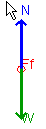
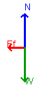
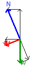
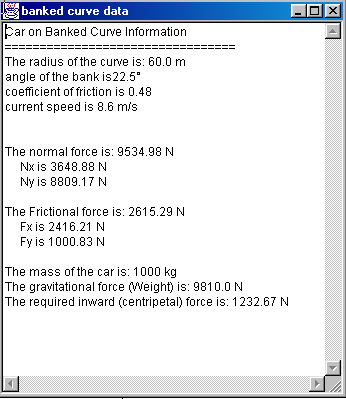
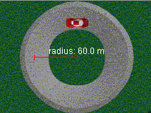

Show me - Car on a Banked Road
The applet Car on a Banked Road simulates the motion of a car as it rounds
a corner.
Preamble
This applet can be used to illustrate the physics of traveling
around a corner. Cases involving friction and a banked curve can be investigated.
This page is designed to get you started using the applet.
The applet should be open. The step-by-step instructions on this page are to
be done in the applet. You may need to toggle back and forth between instructions
and applet if your screen space is limited.
The applet Car on a Banked Road is intended to illustrate
the subtle interplay between the forces of gravity, friction and the normal
force for an object traveling in a circular path.
Forces and Free Body Diagrams
|
|
To start, press the Free Body Diagram button .
The following menu will open:
Select all of the options. You should see a Fee Body Diagram drawn on
the left side of the display panel. Since you have selected the "move
FBDs" check box you can grab the FBD with the mouse and move it anywhere
on the panel. You can tell this mode is working if a green circle appears
as you move the cursor to the center of the force diagram.
|
To help see the FBD better
you should select the "hide image mode" by pressing
You should see something like the following: Note that only the normal force
and weight have non-zero magnitude. In order to produce a frictional force
it will be necessary to adjust the input values. We will do that next. |
 |

Adjusting the Input Values and How this
affects the FBD
 Set
the speed and coefficient of static friction to the values shown on the
left. Note that the FBD changes as you do this. The FBD should now look
like the following. Note that the force of friction is no longer zero and
is also directed inward - toward the center of the turn. Try changing the
speed or coefficient of friction and observe how the frictional force changes. Set
the speed and coefficient of static friction to the values shown on the
left. Note that the FBD changes as you do this. The FBD should now look
like the following. Note that the force of friction is no longer zero and
is also directed inward - toward the center of the turn. Try changing the
speed or coefficient of friction and observe how the frictional force changes.
|
 |
|
Now introduce
an angle of 22.5 degrees and notice how the FBD changes:
- both the normal force and frictional force vectors change in length
- force components now appear in black
|
|
|  |
|
|
|
Next, reduce the speed of the car from 26.0 m/s
to 8.3 m/s and observe the effect that this has on the size and direction
of the frictional force vector. Experiment with various choices of speed,
angle and coefficient of friction.
|
 |
How to Get Quantitative Data from the Applet
To get quantitative data concerning magnitudes of forces
and components press the  button. The following dialogue opens:
button. The following dialogue opens:
|  |
The information presented gives the magnitude of the normal and frictional
forces as well the components in the x and y directions. It also gives
the inward force needed for this motion to occur.
To see how this works, adjust the speed of the car to be 8.6 m/s, set
the bank angle at 22.5 degrees, the radius of the turn at 60 m and set
m = 0.48. If you open up the calculations panel
you should see something similar to what is shown to the left.
- For example, in order to travel at 8.6 m/s in a 60 m radius turn requires
an inward force of:
 =(1000
kg)(8.6m/s)2/(60.0 m) = 1233 N =(1000
kg)(8.6m/s)2/(60.0 m) = 1233 N
- It is also easy to see that the sum of the upward components
of both the Normal and Frictional forces equals the weight of the car
(8809.17 N + 1000.83 N = 9810.0 N)
- Also, since the frictional force acts up the plane, it follows that
the difference between the x-components of the Normal and Frictional
forces equals the inward force (3648.88 N - 2416.21 N = 1232.67 N).
|
| |
|
How to Set the Radius of the Turn
|  |
The radius of the turn can be adjusted by "grabbing"
the outer tip of the red radius line and dragging outward (increase) or
inward (decrease), toward the center of the turn. The radius will change
in steps of 1 m.
This will have direct impact on the size of both the
frictional and normal forces and you may want to adjust the radius and
observe how these forces change. You can carry out this change even while
the applet is running and observe directly the effect this will have on
the motion of the car. To observe how the radius of the turn affects the
size of some of the forces in this applet you should practice adjusting
the radius and then observe the change in both the FBD and the calculations
that appear in the Show Calculations Panel.
|